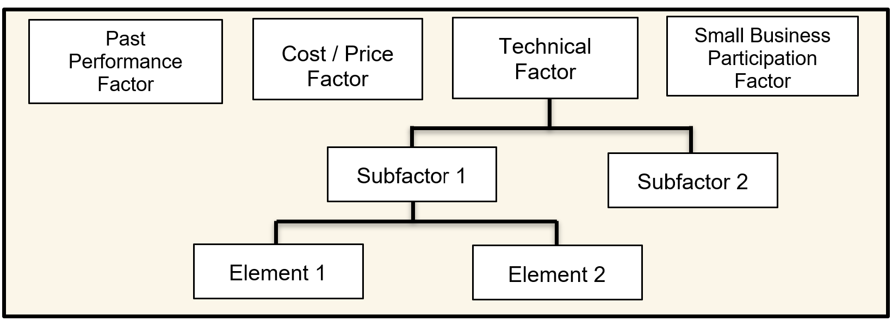

**ID__AFARS_APPENDIX-AA_Chapter-2_2-2__ID**
Selection of Evaluation Factors. Selecting the correct evaluation factors is the most important decision in the evaluation process. Structure the evaluation factors and their relative importance to clearly reflect the needs of your acquisition.
Mandatory Evaluation Considerations. In every source selection, you must evaluate cost/price, and the technical quality of the proposed product or service through one or more non-cost evaluation factors (e.g. technical excellence, management capability, and key personnel qualifications).
Additionally, you must evaluate past performance on all negotiated competitive acquisitions expected to exceed the thresholds identified in FAR 15.304 and DFARS 215.304, unless the PCO documents why it would not be appropriate. There may be other required evaluation factors, such as small business participation, based upon regulatory and/or statutory requirements (see FAR 15.304 and its supplements).
From this point, the acquisition team must apply prudent business judgement to add other evaluation factors, subfactors, and elements that are important to selecting the most advantageous proposal(s). The number of factors and subfactors should be kept to the absolute minimum required to effectively assess the proposals. The use of more factors than needed to conduct the evaluation can complicate and extend the process while providing no additional value, and dilute the meaningful discriminators. Limiting factors also serves to reduce the evaluation oversight span-of-control responsibilities of the SSEB leadership, SSA/SSAC, PCO and legal counsel, thereby permitting more focused oversight on the remaining (and most important) factors/subfactors and reducing the likelihood of evaluation errors.
Common evaluation factors are cost/price, technical, past performance, and small business participation. Additionally, as appropriate, you may have other evaluation factors and/or may use one or more levels of subfactors. The standard Army naming convention for the various levels is: Evaluation Factor, Subfactor, and Element.

Figure 2-1: Sample Evaluation Factor Structure
Establishing Evaluation Factors and Subfactors. The acquisition team develops the evaluation factors, and any appropriate subfactors and elements. The team should select the factors based on user requirements, acquisition objectives, thorough market research and risk analysis. Figure 2-2 illustrates the steps involved in developing the factors and subfactors.
Once the RFP is issued, the factors and subfactors give the offerors insight into the significant considerations the Government will use in selecting the best value proposal and help them to understand the source selection process. Carefully consider whether minimum “go/no go” or “pass/fail” entry-gates, can be included. When used properly, this use of entry-gate criteria can streamline the evaluation process significantly.
|
Figure 2-2:Steps Involved in Formulating Evaluation Factors and Subfactors
Nongovernment Advisors. Nongovernment advisors may assist in, and provide input, regarding the evaluation, but they shall not determine ratings or rankings of the offeror’s proposals. Nongovernment sources can include academia, nonprofit institutions, and industry.
Reminder:When using nongovernment advisors, you must advise potential offerors of the nongovernment advisors’ participation in the source selection, and obtain the offerors consent to provide access of its proprietary information to the nongovernment advisor, or the company which employs the nongovernment advisor. Figure 2-3 identifies suggested RFP language relative to the use of commercial firms to support the source selection process. (Reference DOD Source Selection Procedures 2.2.8)
(1) Offerors are advised that employees of the firms identified below may serve as non-government advisors in the source selection process. These individuals will be authorized access only to those portions of the proposal data and discussions that are necessary to enable them to perform their respective duties. Such firms are expressly prohibited from competing on the subject acquisition. INSERT NAMES, ADDRESSES, AND TELEPHONE NUMBERS OF FIRMS (2) In accomplishing their duties related to the source selection process, the aforementioned firms may require access to proprietary information contained in the offerors' proposals. Therefore, pursuant to FAR 9.505?4, these firms must execute an agreement with each offeror that states that they will (1) protect the offerors? information from unauthorized use or disclosure for as long as it remains proprietary and (2) refrain from using the information for any purpose other than that for which it was furnished. To expedite the evaluation process, each offeror must contact the above companies to effect execution of such an agreement prior to the submission of proposals. Each offeror shall submit copies of the agreement with their proposal. NOTE: This requirement shall flow down to all Subcontractors. |
Figure 2-3: Suggested RFP Language for the use of Nongovernment Advisors
Source Selection for Services. The source selection process for services, including development of the SSP, is often very complex. Organizations must ensure that the SST is comprised of qualified personnel with specific knowledge of the types of services to be acquired.
The use of Sample Tasks is an effective tool in the evaluation of services. Sample Tasks can provide insight as to the offeror’s level of understanding of the work to be performed, as well as how the technical approach relates to the cost/price proposed for that Sample Task. See Appendix G for a sample of a Sample Task.
To the maximum extent practicable, sample tasks should set forth requirements that are contemplated for award to establish the expectation that offerors will be held accountable for the resources and costs they propose.
The use of generic or hypothetical sample tasks may unintentionally create an environment encouraging offerors to understate resources and costs in recognition of the fact that the sample tasks will not be awarded. Consequently, care must be taken to draft the sample tasks as closely as possible to the types and scope of services expected to be acquired from the Performance Work Statement (PWS). If possible, consider the use of a “live” task, which would be awarded at time of contract award.
Evaluation criteria should be limited to essential areas of performance that are measurable during the proposal evaluation process. This will permit a more focused evaluation of the offeror's proposed solution to the sample task.
If utilizing a sample task, ensure this is accounted for and aligned with Sections L and M.